To make the robot's movements both stable and elegant, we came up with a few constraints and objectives for the footfall pattern transition. Below is one of the optimized results:
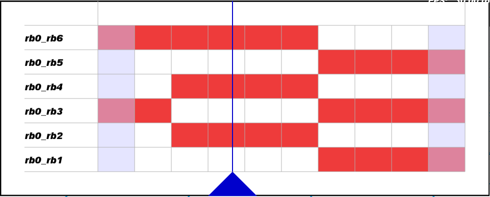
Below are the added constraints&objectives and the conditions happened without them:
Lock Constraint
Listed in the interface page.
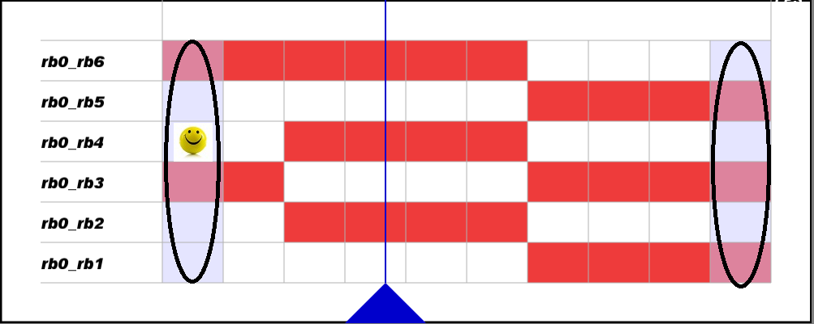
No Single Swing Point Constraint
The swing state is supposed to last for a period of time, and single-swing point is not supposed to appear in the whole transition process.
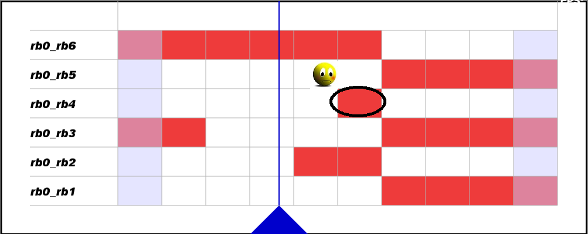
Total Stance Points Constraint
The total number of swing points should take up 30%~40%(about 1/3) of the total swing/stance points in the whole process. Otherwise the following motion planning optimization process may not converge, and the robot's motion may look bizarre.
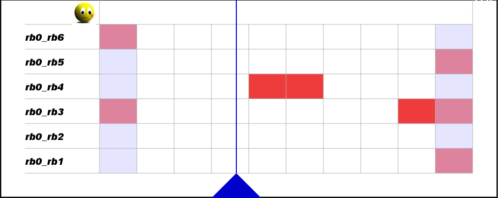
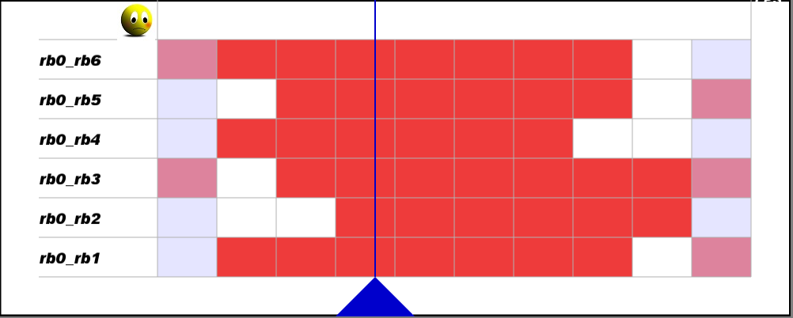
Limb Symmetry Constraint
The robot is expected to show a strong motor coordination ability. We thus want each limb's behavior to be as similar as possible. The difference between the total number of swing points for each two limbs shall be <=2:
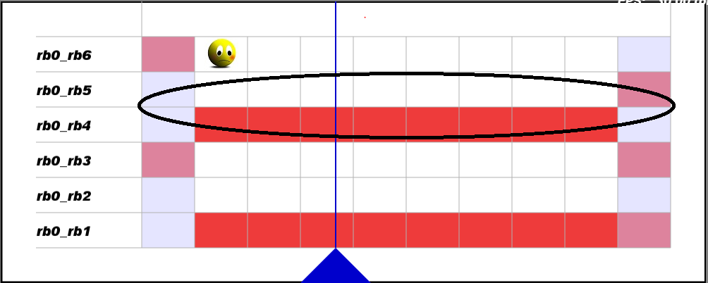
Limb Frequency Constraint
To prevent epileptic robot limbs, we ask that the total number of 'switching' time-sample points for each limb should be <=2(We call a time-sample point 'switch' if the limb changes its state(from
swing to stance or from stance to swing) at that time.):
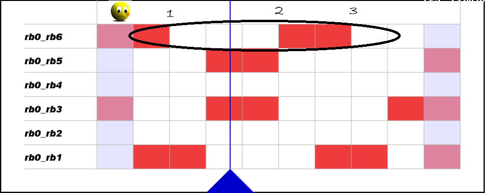
We also require the robot to stand for at least 3 time sample points when it swings the same limb twice:
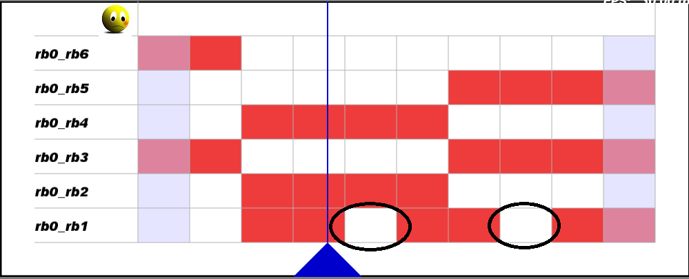
Single Time Point Constraint
For each time sample point, we set a few limb constraints to make the robot's motion look stable. First of all, The robot shall have at least 3 limbs on the ground at a time, otherwise it may shake fiercely and risk falling down:
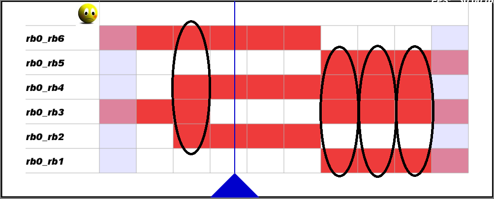
Even if there are 3 stance limbs, we ask that the formed supported polygon area should not be less than a certain value:
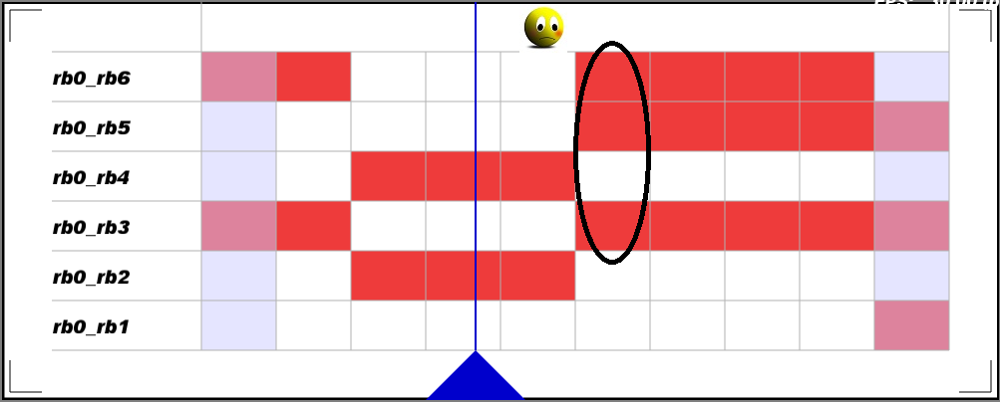
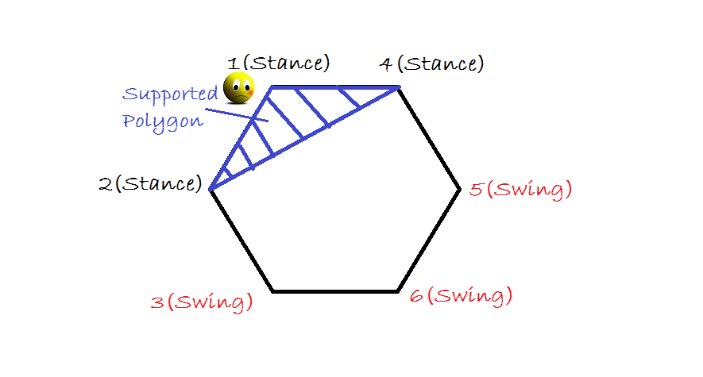
Time-line Frequency Objective
To prevent a epileptic robot, we try to minimize the total number of 'jumping' time-sample points(We call a time-sample point 'jump' if one of the limbs changes its state (from swing to stance or from stance to swing) at that time.
):